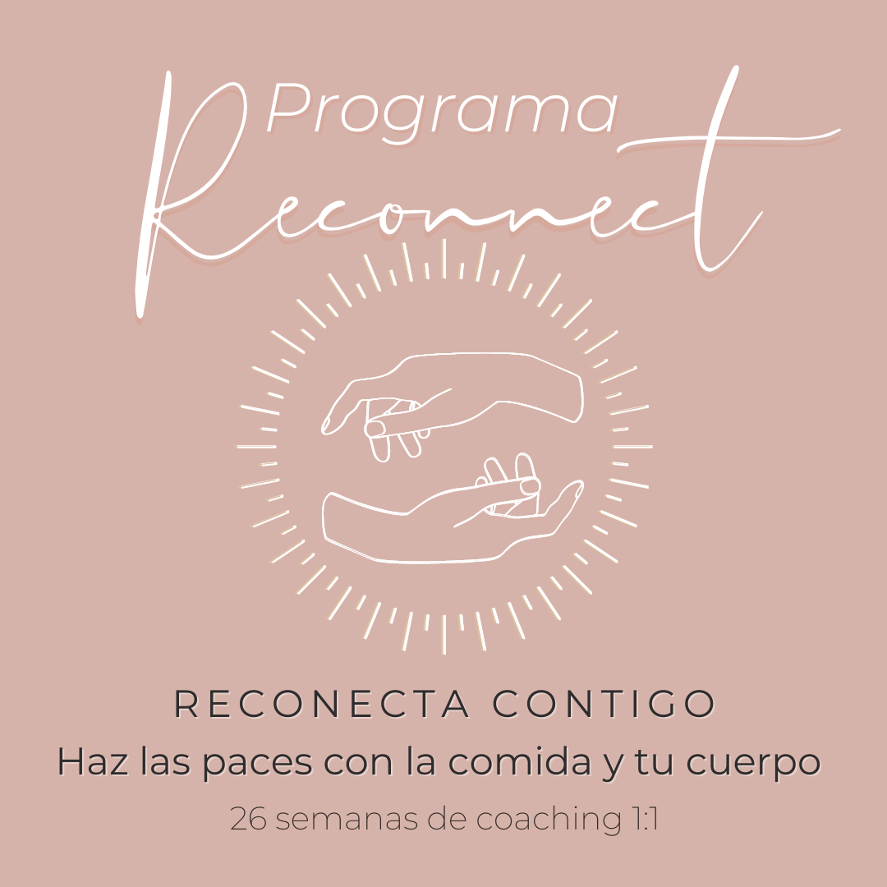

Programa Reconnect

Mi Progarma Reconnect es un programa individualizado de sesiones 1:1 que consta de cuatro fases para ayudarte a reconectar con tu sabiduría interior, encontrar la calma y el equilibrio con los alimentos y recuperar la confianza en tí misma.
-
Este programa es para ti si:
- Vives en guerra con tu cuerpo + la comida y deseas sanarlo desde el origen
- Experimentas descontrol con la comida y quieres encontrar tu equilibrio
- Te sientes atrapada en el ciclo dieta y deseas vivir en libertad
- Pasas tus día pensando en comida y quieres encontrar calma
- Vives incómoda en tu cuerpo y deseas hacerlo tu hogar
- Quieres aprender a gestionar tus emociones sin tener que recurrir a la comida
- Deseas soltar la culpabilidad y miedo para comenzar a aceptar todo lo eres
- Quieres construir una relación más libre, flexible y armoniosa con tu cuerpo y la comida
- Quieres confiar más en ti misma y en tu poder intuitivo
-
Lo que puedes esperar:
- 26 semanas de apoyo 1:1
- Un programa de coaching adaptado a tus necesidades
- 13 sesiones 1:1 vía zoom de 60 minutos
- Prácticas de conexión y embodiment, worksheets, meditaciones PDF’s y recursos para ayudarte a comer de forma consciente e intuitiva
- Acceso a mi entre sesiones vía Whatsapp para apoyarte a lo largo de todo tu proceso
-
Funciona porque:
- Es un programa estructurado para guiarte a recuperar tu conexión contigo. Lo creé integrando todas las prácticas y técnicas que me ayudaron a mi a lo largo de mi proceso y hubiese deseado tener dentro de un solo contenedor.
- Te facilitaré recursos y herramientas para sanar desde el origen que se quedarán contigo por el resto de tu vida
- No es un quick fix, es un proceso que te permitirá comprenderte y recuperar tu poder para así lograr un cambio definitivo
- Gira alrededor de ti; te guiaré y te proporcionaré apoyo para que transformes tus creencias, eleves tu conciencia y tomes acción inspirada. Recuerda que cuando cambias tu, cambia tu realidad.
Piensa en lo mejor que sería tu vida si ya no tuvieras que luchar contra ti misma. Si estás lista para sentirte liberada de la culpa por la comida y la imagen corporal negativa, me encantaría apoyarte en tu camino hacia la reconexión con tu cuerpo para que aprendas a escucharlo y confiar en él nuevamente.
¡ESTOY LISTA!